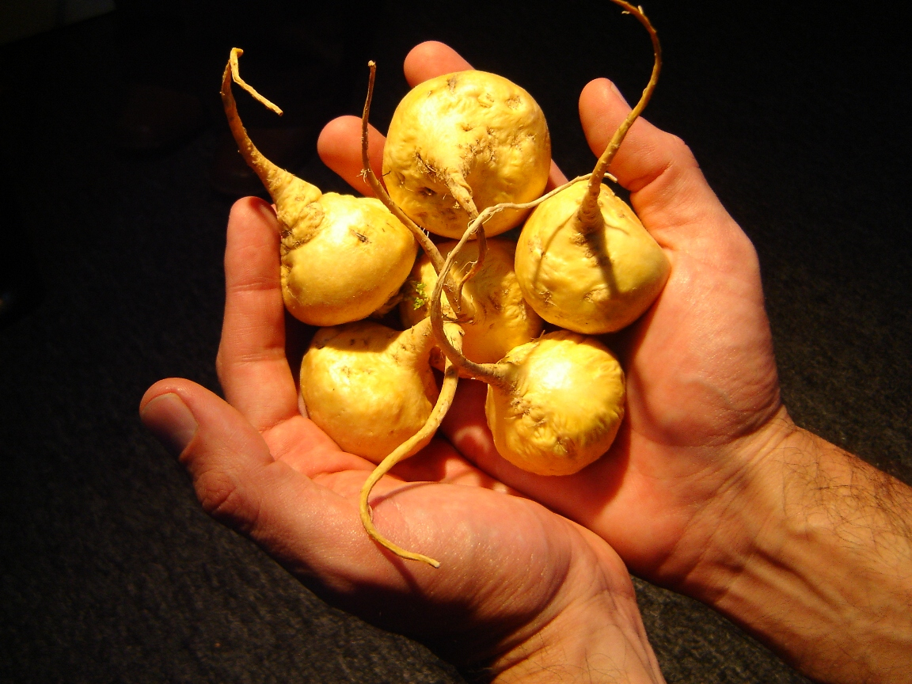
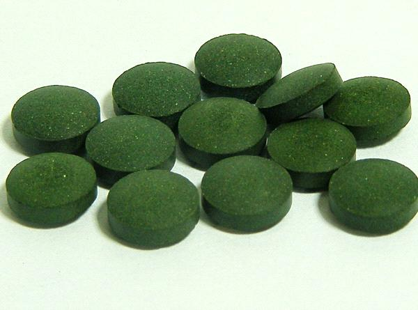

Marianna white-green version
Super Food
All you need to know.
macka is considered as super foodThis template is not like my others, it is a little bit special..
Chlorella .
Spirulina är
the main priorities
-

site info
© 2015 Marianna | Template design by Marianna